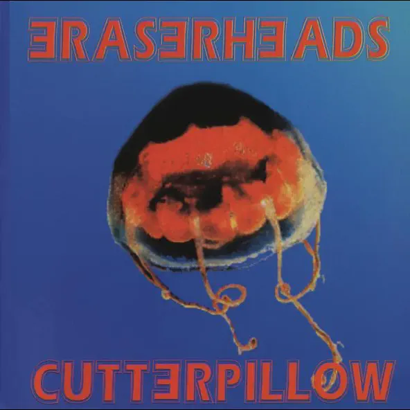

Eraserheads
Music has always been an essential part of my life, filling my days with melodies that resonate deeply within me. Among the many genres I enjoy, Original Pilipino Music (OPM) holds a special place in my heart. Growing up, I was surrounded by the timeless tunes of bands like the Eraserheads and Parokya ni Edgar. The Eraserheads' iconic songs like "Ang Huling El Bimbo" and "With a Smile" have this unique charm that brings comfort and nostalgia. Parokya ni Edgar, on the other hand, never fails to deliver fun and relatable songs like "Harana" and "The Yes Yes Show." Their music feels like a constant companion, whether I'm chilling alone or hanging out with friends. I also love how OPM often tells powerful stories about love, heartbreak, and life in the Philippines. Bands like Rivermaya and Bamboo have also captured my heart with their poetic lyrics and distinct sound. Listening to songs like "214" or "Noypi" reminds me of how impactful Filipino artists are. I admire how OPM artists pour their emotions into their songs, making each track feel so authentic.
Frostedglasses, a rising OPM artist, is someone I deeply support because his music is raw and heartfelt. His song "Panimulang Oda" is a masterpiece that deserves more recognition. There's just something special about hearing Filipino lyrics that speak directly to our culture and experiences. Bands like December Avenue and Ben&Ben add a modern touch to OPM, blending folk and pop beautifully. Their emotionally charged songs like "Sa Ngalan ng Pag-ibig" and "Kathang Isip" leave a lasting impact. I also find comfort in the raw, unfiltered style of indie OPM bands. They remind me that music isn't just about fame — it's about connection and sincerity. OPM has this rare ability to hit you right in the feels, and that's what makes it unforgettable. Every time I listen to OPM, I feel proud to be Filipino, knowing how talented our artists are. OPM's diversity is what keeps me hooked — from rock ballads to soulful acoustic pieces, it's always a vibe. Without a doubt, OPM will always have a special place in my playlist.
Frostedglasses
Go to top